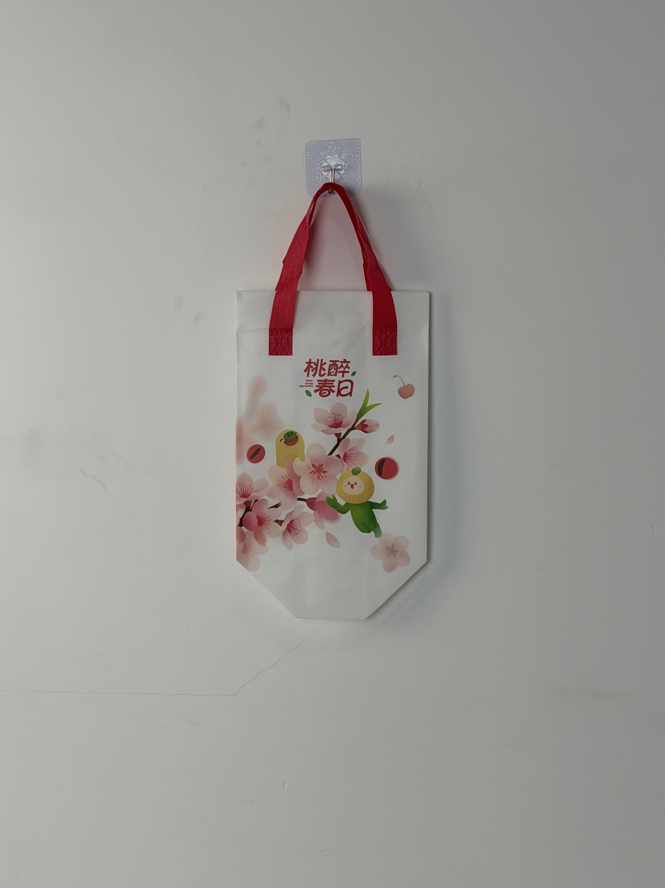

A delicate seasonal tote designed for QieGuo NOW, featuring cherry-blossom watercolor illustrations and playful fruit mascots that transform a functional fruit-delivery carrier into a spring collectible.

QieGuo NOW is a leading Chinese fresh-cut fruit delivery platform, operating in major tier-1 and tier-2 cities through a network of central kitchens and last-mile delivery partners. The brand targets health-conscious urban professionals and young consumers who prioritize convenience without sacrificing nutritional quality. In a market where fruit delivery is increasingly commoditized, QieGuo NOW differentiates through seasonal menu innovation and emotionally resonant packaging that elevates the everyday act of eating fruit into a small celebration.
Fruit is already healthy. We want our packaging to make it feel joyful too — something customers look forward to receiving, not just consuming.
The spring-limited bag was conceived as part of an annual seasonal marketing calendar that pairs fruit varieties with cultural moments. The cherry-blossom theme aligned with China's spring picnic season and the brand's peach and cherry product launches, creating a cohesive narrative across product, packaging, and digital marketing.
The creative direction draws from East Asian spring aesthetics — soft pink cherry blossoms, gentle watercolor washes, and anthropomorphic nature characters. The illustration features fruit mascots (peach and citrus) nestled among blooming sakura branches, creating a narrative scene that rewards close inspection. This approach transforms the bag from a disposable container into a keepsake that customers actively preserve.
Soft pink sakura illustration creates emotional resonance with spring cultural moments and picnic aesthetics.
Anthropomorphic peach and citrus figures add playful personality and collectibility to seasonal releases.
"桃醉春日" (Peach-Drunk Spring Days) pairs product flavor with poetic seasonal atmosphere.
Clean white non-woven fabric maximizes color vibrancy of the watercolor-style CMYK print.
Fresh-cut fruit delivery presents unique packaging challenges: the bag must maintain cool temperatures for cut fruit while presenting an aesthetically pleasing surface for brand storytelling. The QieGuo NOW spring tote balances these requirements through lightweight insulation and high-fidelity illustration printing.
| Parameter | Specification | Test Standard |
|---|---|---|
| Cold Retention | < 10°C for 30 min (25°C ambient) | Internal Protocol |
| Load Capacity | 3 kg | ASTM D5265 |
| Print Resolution | 175 LPI | Internal Protocol |
| Color Fastness | Grade 4-5 | ISO 105-B02 |
Seasonal limited-edition bags require rapid production turnaround to align with narrow marketing windows. The four-stage workflow was optimized for 50,000-unit batches with color accuracy critical to the watercolor aesthetic.
Watercolor illustration optimized for non-woven substrate dot gain. Pastel gradient curves adjusted to prevent banding in light pink regions.
CMYK four-color process on white non-woven. Special attention to magenta and yellow balance for accurate cherry-blossom pink reproduction.
2mm EPE foam bonded to aluminum-PE barrier. Thin profile maintains bag flexibility while providing adequate thermal protection.
Ultrasonic die-cutting with sealed edges. Red handles attached with cross-stitch reinforcement. 100% visual inspection for print defects.
The spring-limited bag launched during China's Qingming Festival holiday period, traditionally associated with outdoor gatherings and spring appreciation. It was distributed with all orders containing peach or cherry fruit cups, creating a thematic product-packaging bundle.
Key Insight: Social-media monitoring revealed that customers frequently photographed the bag alongside their fruit cups in park and picnic settings. The cherry-blossom aesthetic proved particularly effective among female consumers aged 20-30, who represented 68% of seasonal order volume.
Beyond the initial delivery, the bag's aesthetic appeal encouraged reuse as a small gift bag, lunch carrier, and accessory pouch. This extended lifecycle transformed a single-use delivery wrapper into a sustained brand touchpoint that generated impressions for months after the spring campaign concluded.
Three design decisions differentiate this seasonal bag from standard food-delivery packaging. Each leverages specific cultural and behavioral patterns in China's urban fruit-consumption market.
By explicitly positioning the bag as "spring-limited," QieGuo NOW triggers scarcity psychology and collection behavior. Customers who missed the spring edition actively inquired about summer and autumn versions, demonstrating successful habit formation around seasonal packaging anticipation.
The soft watercolor illustration style elevates perceived product quality compared to photographic or vector-graphic alternatives. In consumer testing, the watercolor bag scored 23% higher on "premium feel" metrics despite identical construction costs.
The clean white bag background functions as a natural reflector in smartphone photography, making fruit cup contents appear more vibrant in social-media posts. This subtle design choice significantly increased user-generated content volume.
We design and manufacture limited-edition seasonal bags for food and beverage brands. From watercolor illustration to thermal engineering, we create packaging that customers collect, not discard.